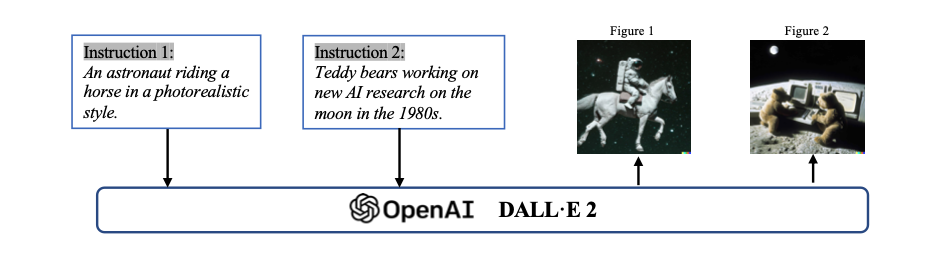
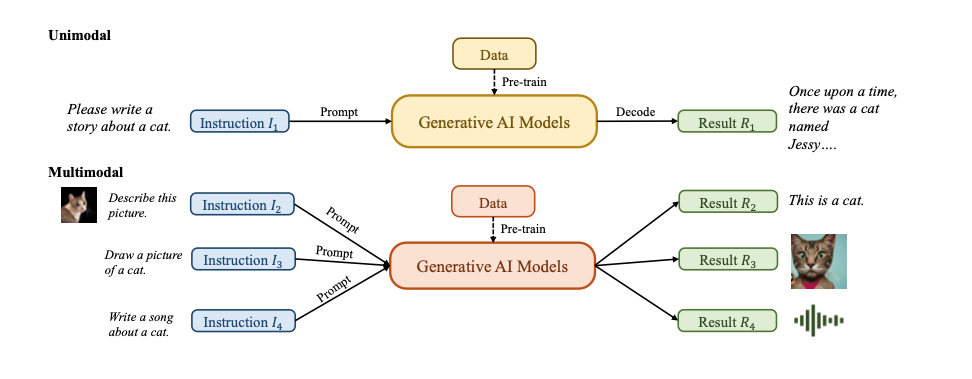
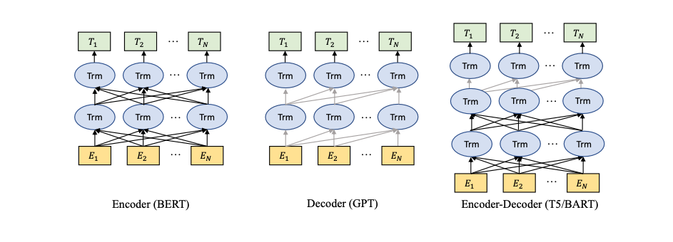
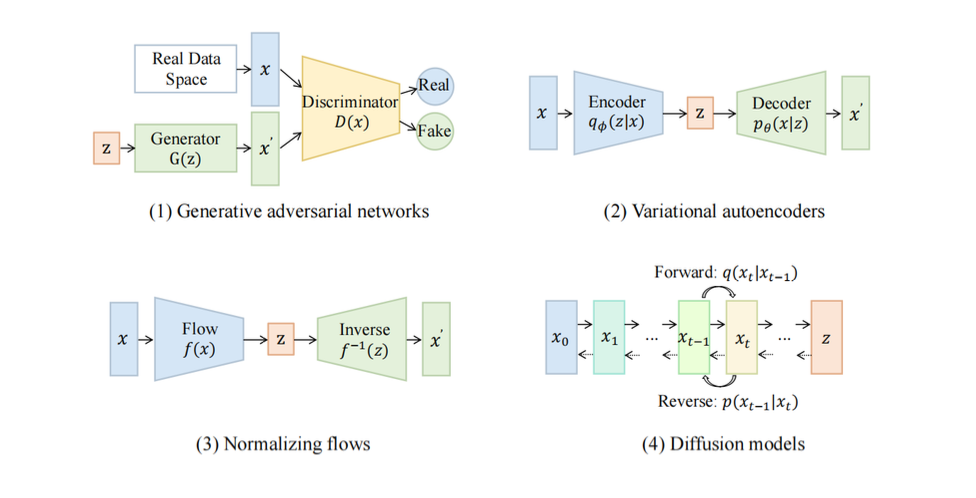
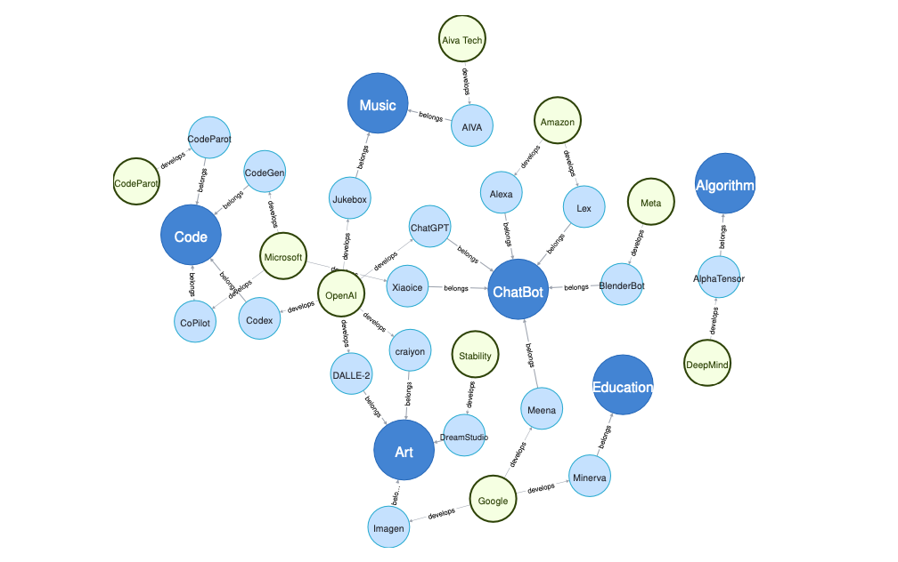
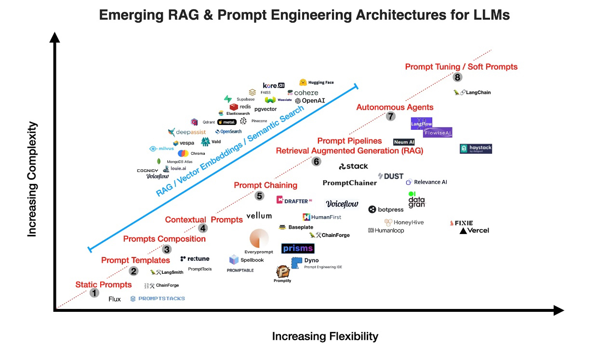

1 Introduction
In this chapter, we will lay the foundation for building a chat-to-PDF app using Large Language Models (LLMs) with a focus on the Retrieval-Augmented Generation approach. We’ll explore the fundamental concepts and technologies that underpin this project.
1.1 The Role of LLMs in NLP
Large Language Models (LLMs) play a crucial role in Natural Language Processing (NLP). These models have revolutionized the field of NLP by their ability to understand and generate human-like text. With advances in deep learning and neural networks, LLMs have become valuable assets in various NLP tasks, including language translation, text summarization, and chatbot development.
One of the key strengths of LLMs lies in their capacity to learn from vast amounts of text data. By training on massive datasets, LLMs can capture complex linguistic patterns and generate coherent and contextually appropriate responses. This enables them to produce high-quality outputs that are indistinguishable from human-generated text.
LLMs are trained using a two-step process: pre-training and fine-tuning. During pre-training, models are exposed to a large corpus of text data and learn to predict the next word in a sentence. This helps them develop a strong understanding of language structure and semantics. In the fine-tuning phase, the models are further trained on task-specific data to adapt their knowledge to specific domains or tasks.
The versatility and effectiveness of LLMs make them a powerful tool in advancing the field of NLP. They have not only improved the performance of existing NLP systems but have also opened up new possibilities for developing innovative applications. With continued research and development, LLMs are expected to further push the boundaries of what is possible in natural language understanding and generation.
Large Language Models (LLMs) represent a breakthrough in NLP, allowing machines to understand and generate human-like text at an unprecedented level of accuracy and fluency. Some of the key roles of LLMs in NLP include:
- Natural Language Understanding (NLU): LLMs can comprehend the nuances of human language, making them adept at tasks such as sentiment analysis, entity recognition, and language translation.
- Text Generation: LLMs excel at generating coherent and contextually relevant text. This capability is invaluable for content generation, chatbots, and automated writing.
- Question Answering: LLMs are particularly powerful in question answering tasks. They can read a given text and provide accurate answers to questions posed in natural language.
- Summarization: LLMs can summarize lengthy documents or articles, distilling the most important information into a concise form.
- Conversational AI: They serve as the backbone of conversational AI systems, enabling chatbots and virtual assistants to engage in meaningful and context-aware conversations.
- Information Retrieval: LLMs can be used to retrieve relevant information from vast corpora of text, which is crucial for applications like search engines and document retrieval.
- Customization: LLMs can be fine-tuned for specific tasks or domains, making them adaptable to a wide range of applications.
1.2 The Importance of Question Answering over PDFs
Question answering over PDF documents addresses a critical need in information retrieval and document processing. Here, we’ll explore why it is important and how LLMs can play a pivotal role:
The Importance of Question Answering over PDFs:
- Document Accessibility: PDF is a widely used format for storing and sharing documents. However, extracting information from PDFs, especially in response to specific questions, can be challenging for users. Question answering over PDFs enhances document accessibility.
- Efficient Information Retrieval: For researchers, students, and professionals, finding answers within lengthy PDF documents can be time-consuming. Question-answering systems streamline this process, enabling users to quickly locate the information they need.
- Enhanced User Experience: In various domains, including legal, medical, and educational, users often need precise answers from PDF documents. Implementing question answering improves the user experience by providing direct and accurate responses.
- Automation and Productivity: By automating the process of extracting answers from PDFs, organizations can save time and resources. This automation can be particularly beneficial in scenarios where large volumes of documents need to be processed.
- Scalability: As the volume of digital documents continues to grow, scalable solutions for question answering over PDFs become increasingly important. LLMs can handle large datasets and diverse document types.
In various industries, there is a growing demand for efficient information retrieval from extensive collections of PDF documents. Take, for example, a legal firm or department collaborating with the Federal Trade Commission (FTC) to process updated information about legal cases and proceedings. Their task often involves processing a substantial volume of documents, sifting through them, and extracting relevant case information—a labor-intensive process.
Bachground: Every year the FTC brings hundreds of cases against individuals and companies for violating consumer protection and competition laws that the agency enforces. These cases can involve fraud, scams, identity theft, false advertising, privacy violations, anti-competitive behavior and more.
The advent of the Retrieval-Augmented Generation (RAG) approach marks a new era in question and answering that promises to revolutionize workflows within these industries.
1.3 The Retrieval-Augmented Generation Approach
The Retrieval-Augmented Generation approach is a cutting-edge technique that combines the strengths of information retrieval and text generation. Let’s explore this approach in detail:
The Retrieval-Augmented Generation Approach:
The Retrieval-Augmented Generation approach combines two fundamental components, retrieval and generation, to create a powerful system for question answering and content generation. Here’s an overview of this approach:
- Retrieval Component: This part of the system is responsible for searching and retrieving relevant information from a database of documents. It uses techniques such as indexing, ranking, and query expansion to find the most pertinent documents.
- Generation Component: Once the relevant documents are retrieved, the generation component takes over. It uses LLMs to process the retrieved information and generate coherent and contextually accurate responses to user queries.
- Benefits: The key advantage of this approach is its ability to provide answers based on existing knowledge (retrieval) while also generating contextually rich responses (generation). It combines the strengths of both worlds to deliver high-quality answers.
- Use Cases: Retrieval-Augmented Generation is particularly useful for question answering over large document collections, where traditional search engines may fall short in providing concise and informative answers.
- Fine-Tuning: Successful implementation of this approach often involves fine-tuning LLMs on domain-specific data to improve the quality of generated responses.
By understanding the role of LLMs in NLP, the importance of question answering over PDFs, and the principles behind the Retrieval-Augmented Generation approach, you have now laid the groundwork for building your chat-to-PDF app using these advanced technologies. In the following chapters, we will delve deeper into the technical aspects and practical implementation of this innovative solution.
1.4 A Brief History of LLMs
Lately, ChatGPT, as well as DALL-E-2 and Codex, have been getting a lot of attention. This has sparked curiosity in many who want to know more about what’s behind their impressive performance. ChatGPT and other Generative AI (GAI) technologies fall into a category called Artificial Intelligence Generated Content (AIGC). This means they’re all about using AI models to create content like images, music, and written language. The whole idea behind AIGC is to make creating conetent faster and easier.
AIGC is achieved by extracting and understanding intent information from instructions provided by human, and generating the content according to its knowledge and the intent information. In recent years, large-scale models have become increasingly important in AIGC as they provide better intent extraction and thus, improved generation results.
With more data and bigger models, these AI systems can make things that look and sound quite realistic and high-quality. The following shows an example of text prompting that generates images according to the instructions, leveraging the OpenAI DALL-E-2 model.

In the realm of Generative AI (GAI), models can typically be divided into two categories: unimodal models and multimodal models. Unimodal models operate by taking instructions from the same type of data as the content they generate, while multimodal models are capable of receiving instructions from one type of data and generating content in another type. The following figure illustrates these two categories of models.

These models have found applications across diverse industries, such as art and design, marketing, and education. It’s evident that in the foreseeable future, AIGC will remain a prominent and continually evolving research area with artificial intelligence.
1.4.1 Foundation Models
Speaking of LLMs and GenAI, we cannot overlook the significant role played by Transformer models.
Transformer is the backbone architecture for many state-of-the-art models, such as GPT, DALL-E, Codex, and so on.
Transformer started out to address the limitations of traditional models like RNNs when dealing with variable-length sequences and context. The heart of the Transformer is its self-attention mechanism, allowing the model to focus on different parts of an input sequence. It comprises an encoder and a decoder. The encoder processes the input sequence to create hidden representations, while the decoder generates an output sequence. Each encoder and decoder layer includes multi-head attention and feed-forward neural networks. Multi-head attention, a key component, assigns weights to tokens based on relevance, enhancing the model’s performance in various NLP tasks. The Transformer’s inherent parallelizability minimizes inductive biases, making it ideal for large-scale pre-training and adaptability to different downstream tasks.
Transformer architecture has dominated natural language processing, with two main types of pre-trained language models based on training tasks: masked language modeling (e.g., BERT) and autoregressive language modeling (e.g., GPT-3). Masked language models predict masked tokens within a sentence, while autoregressive models focus on predicting the next token given previous ones, making them more suitable for generative tasks. RoBERTa and XL-Net are classic examples of masked language models and have further improved upon the BERT architecture with additional training data and techniques.

In this graph, you can see two types of information flow indicated by lines: the black line represents bidirectional information flow, while the gray line represents left-to-right information flow. There are three main model categories:
- Encoder models like BERT, which are trained with context-aware objectives.
- Decoder models like GPT, which are trained with autoregressive objectives.
- Encoder-decoder models like T5 and BART, which merge both approaches. These models use context-aware structures as encoders and left-to-right structures as decoders.
1.4.2 Reinforcement Learning from Human Feedback
To improve AI-generated content (AIGC) alignment with user intent, i.e., considerations in usefulness and truthfulness, reinforcement learning from human feedback (RLHF) has been applied in models like Sparrow, InstructGPT, and ChatGPT.
The RLHF pipeline involves three steps: pre-training, reward learning, and fine-tuning with reinforcement learning. In reward learning, human feedback on diverse responses is used to create reward scalars. Fine-tuning is done through reinforcement learning with Proximal Policy Optimization (PPO), aiming to maximize the learned reward.
However, the field lacks benchmarks and resources for RL, which is seen as a challenge. But this is changing day-by day. For example, an open-source library called RL4LMs was introduced to address this gap. Claude, a dialogue agent, uses Constitutional AI, where the reward model is learned via RL from AI feedback. The focus is on reducing harmful outputs, with guidance from a set of principles provided by humans. See more about the topic of Constitutional AI in one of our blog post here.
1.4.3 GAN
Generative Adversarial Networks (GANs) are widely used for image generation. GANs consist of a generator and a discriminator. The generator creates new data, while the discriminator decides if the input is real or not.
The design of the generator and discriminator influences GAN training and performance. Various GAN variants have been developed, including LAPGAN, DCGAN, Progressive GAN, SAGAN, BigGAN, StyleGAN, and methods addressing mode collapse like D2GAN and GMAN.
The following graph illustrates some of the categories of vision generative models.

Although GAN models are not the focus of our book, they are essential in powering multi-modality applications such as the diffusion models.
1.4.4 Applications
Chatbots are probably one of the most popular applications for LLMs.
Chatbots are computer programs that mimic human conversation through text-based interfaces. They use language models to understand and respond to user input. Chatbots have various use cases, like customer support and answering common questions. Our “chat with your PDF documents” is a up-and-coming use case!
Other notable examples include Xiaoice, developed by Microsoft, which expresses empathy, and Google’s Meena, an advanced chatbot. Microsoft’s Bing now incorporates ChatGPT, opening up new possibilities for chatbot development.

This graph illustrates the relationships among current research areas, applications, and related companies. Research areas are denoted by dark blue circles, applications by light blue circles, and companies by green circles.
In addition, we have previously written about chatbots and now they are part of history, but still worth reviewing:
- Blogpost: What Does A Chatbot Look Like Under the Hood?
- Blogpost: What Is Behind the Scene of A Chatbot NLU?
- Blogpost: What More Can You Do with Chatbots?
Of course, chatbots are not the only application. There are vast possibilities in arts and design, music generation, education technology, coding and beyond - your imagination doesn’t need to stop here.
1.4.5 Prompt Learning
Prompt learning is a new concept in language models. Instead of predicting \(y\) given \(x\), it aims to find a template \(x^\prime\) that predicts \(P(y|x^\prime)\).
Normally, prompt learning will freeze the language model and directly perform few-shot or zero- shot learning on it. This enables the language models to be pre-trained on large amount of raw text data and be adapted to new domains without tuning it again. Hence, prompt learning could help save much time and efforts.
Traditionally, prompt learning involves prompting the model with a task, and it can be done in two stages: prompt engineering and answer engineering.
Prompt engineering: This involves creating prompts, which can be either discrete (manually designed) or continuous (added to input embeddings) to convey task-specific information.
Answer engineering: After reformulating the task, the generated answer must be mapped to the correct answer space.
Besides single-prompt, multi-prompt methods combine multiple prompts for better predictions, and prompt augmentation basically beefs up the prompt to generate better results.
Moreover, in-context learning, a subset of prompt learning, has gained popularity. It enhances model performance by incorporating a pre-trained language model and supplying input-label pairs and task-specific instructions to improve alignment with the task.
Overall, in the dynamic landscape of language models, tooling and applications, the graph below illustrates to the evolution of language model engineering. With increasing flexibility along the x-axis and rising complexity along the y-axis, this graph offers a bird’s-eye view of the choices and challenges faced by developers, researchers and companies.

In the top-right corner, you can see the complex, yet powerful tools like OpenAI, Cohere, and Anthropic (to-be-added), which have pushed the boundaries of what language models can achieve. Along the diagonal, the evolution of prompt engineering is displayed, from static prompts to templates, prompt chaining, RAG pipelines, autonomous agents, and prompt tuning. On the more flexible side, options like Haystack and LangChain have excelled, presenting broader horizons for those seeking to harness the versatility of language models.
This graph serves as a snapshot of the ever-evolving landscape of toolings in the realm of language model and prompt engineering today, providing a roadmap for those navigating the exciting possibilities and complexities of this field. It is likely going to be changing every day, reflecting the continuous innovation and dynamism in the space.
In the next Chapter we’ll turn our focus to more details of Retrieval Augmented Generation (RAG) pipelines. We will break down their key components, architecture, and the key steps involved in building an efficient retrieval system.